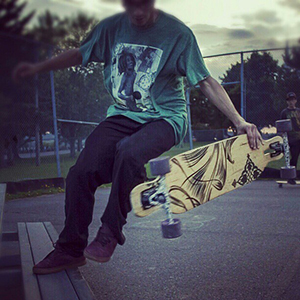
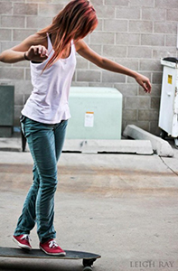
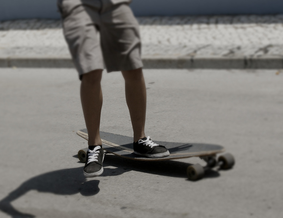
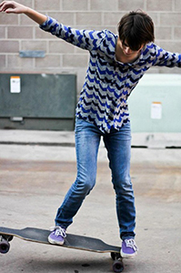
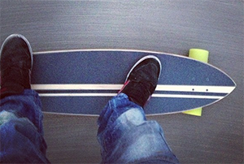
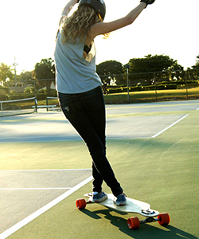

Tricks

Are You Ready to Learn Some Tricks?!
Well Then, You're in the Right Place
Every day, boarders around the world invent new tricks. Now obviously that means that no single person can learn every trick, but that doesn't mean you shouldn't get a head start! The following is a list of just a few tricks, and easy to learn ones at that. In addition, there is also a mixed variety of board and hand tricks. Have fun, and remember, always wear a helmet!
The Tiger Claw

- Step Off Heel Side Edge with Your Front Foot
- Use Back Foot to Scrap Board Towards You
- Pop Up the Board and Grab It with Your Right Hand
- Spin the Board Around and Throw Back Under Your Feet
- Jump Back on the Board and Smile!
Cross Step

- Turn Your Shoulders and Step Back with Your Front Foot, Keeping Toes Pointed Forward, Hitting the Heel Side of the Board
- Cross Over Your Front Foot with Your Back Foot, Hitting the Heel Side of the Board
- Cross Your Front Foot, Hitting the Toe Side Edge of the Board
- Step Back on Your Back Foot, Hitting the Toe Side Edge of the Board
- Jump Back on the Board and Smile!
Chop the Wood

- Jump with Your Front Foot to Heel Side of the Board
- Kick Out with Your Back Foot to Toe Side
- Jump with Both Feet to Toe Side
Nose Manual

- Make Sure Your Feet Are Shoulder-Width Apart
- Place Most of the Weight on Your Front Foot, Using Your Back Foot to Guide the Board
- Use Your Hands for Balance
Walk the Plank

- Turn Front Foot Straight and Bring Back Foot Around, Turning It Around to Front-Face Heel Side
- Pivot Front Foot to Face New Toe Side
- Walk to the Edge of the Board, Then Ho Back to Riding Position
Peter Pan

- Place Left Foot on Back of Board Facing Straight
- Cross Right Foot Over, In Front of Left Foot, Facing Straight on the Heel Side of the Board
- Lean on the Side for a Few Seconds, Then Cross Left Foot Over Right Foot, Facing Straight on the Toe Side of the Board
- Repeat Until You Reach the Front of the Board
- Kick Back Off Again While Sliding Left Foot to the Back of the Board